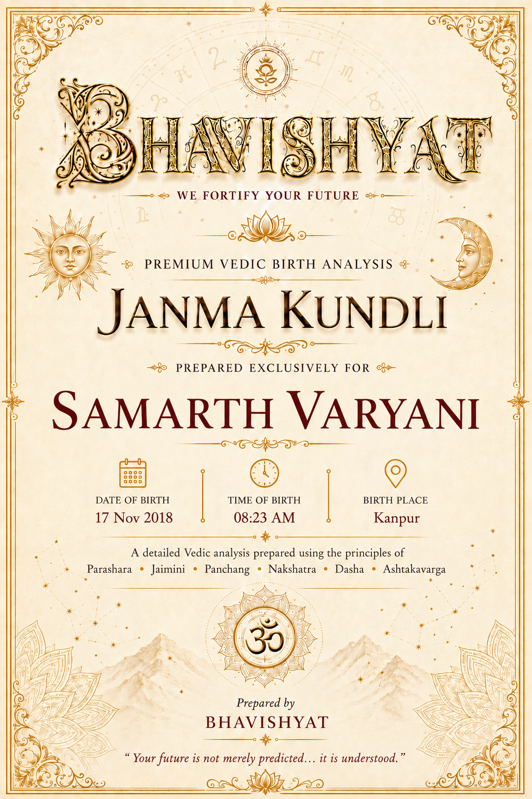
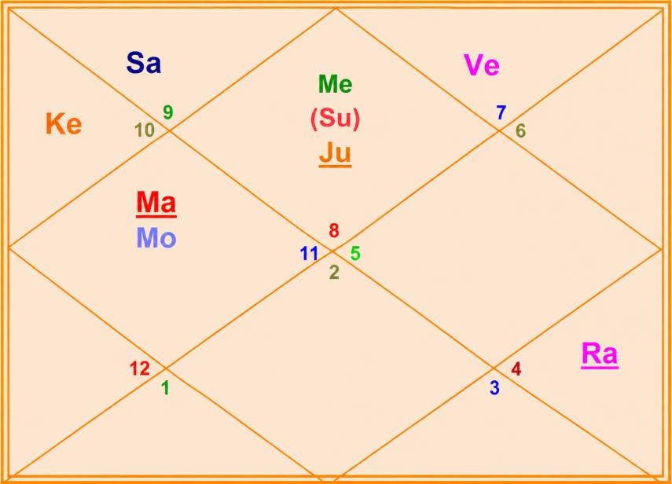

Janma Kundli • Samarth Varyani
Birth Details & Panchang
| Name | Samarth Varyani | Paksha | Shukla |
| Date of Birth | 17 November 2018 | Tithi | Navami (9) |
| Time of Birth | 08:23 AM | Nakshatra | Shatabhisha |
| Birth Place | Kanpur | Vaar | Saturday |
| Longitude | 80°21' E | Yoga | Vyaaghata |
| Latitude | 26°28' N | Karan | Kaulava |
| Ascendant | Scorpio | Asc Lord | Mars |
| Tithi Lord | Sun | Tithi Deity | Ambika |
| Nakshatra Lord | Rahu | Nakshatra Deity | Varuna (God of Cosmic Waters) |
| Yoga Deity | Vayu | Karan Deity | Yama |
| Yogi | Venus | Duplicate Yogi | Jupiter |
| Abhiyogi | Jupiter | Dagdha Rashi | Leo (5), Scorpio (8) |
Natal Chart (Rashi)

| Planet Distribution | Self & Personality, Health, Status, Mother, Home, Land, Property, Emotional Security, Vehicles, Comforts, Family, Wealth & Savings, Food, Spending, Investment, Foreign Lands, Sleep & Bed Pleasure, Spirituality, Solitude, Father & Guru, Religion and Faith, Higher Learning, Long Travel, Siblings, Communication, Short Travel, Skills — relatively less struggle; initial phase of life more eventful | ||
| Ascendant | Scorpio (Vrishchika) | Moon / Sun Sign | Aquarius (Kumbha) / Scorpio (Vrishchika) |
| Malefic | Saturn (Shani), Mercury (Budha) | Shunya Nakshatra | Chitra, Vishakha, Anuradha, U. Bhadrapada |
| Maraka | Venus, Jupiter | Dasha Balance | 04Y 01M 09D |
| Badhaka | Moon | Mangalik | Cancelled |
| Birth Dasha | Ra-Ve-Sa (1-6-3) | ||
Janma Kundli • Samarth Varyani
Favourable Influences
| Benefic Years | 17, 19, 22, 26, 28, 31, 35, 37 | ||
| Favourable Days | Sunday, Monday, Tuesday | ||
| Favourable Planets | Sun, Moon, Mars | ||
| Favourable Signs | Leo (5), Aries (1), Virgo (6) | ||
| Favourable Ratna | Coral, Yellow Sapphire | Favourable UpRatna | Carnelian, Red Jasper, Yellow Topaz, Citrine |
| Lucky Ratna | Pearl | Favourable Deity | Shankar |
| Favourable Metal | Copper, Silver | Favourable Colour | Brick Red |
| Direction | South | Favourable Cereals | Rice |
| Favourable Items | Molasses, Saffron, Musk, Red Sandal | ||
| Favourable Plant | Arka (Giant Milkweed), Banyan | Favourable Temple | Somnath Temple |
Planets in Rashi Chart
| Planet | Lordship | Sign | Nakshatra | Nak. Lord | Nak. Count | Nav Tara | Char Karak |
|---|---|---|---|---|---|---|---|
| Sun | 10L | Scorpio (8) | Vishakha | Jupiter | 7 N | 7 | DaraKarak (7H) |
| Moon | 9L | Aquarius (11) | Shatabhisha | Rahu | 1 N | 8 | Amatyakarak |
| Mars | 1L, 6L | Aquarius (11) | Dhanishtha | Mars | 9 N | 9 | Putrakarak (5H) |
| Mercury | 8L, 11L | Scorpio (8) | Jyeshtha | Mercury | 4 N | 4 | Atmakarak (Life) |
| Jupiter | 2L, 5L | Scorpio (8) | Anuradha | Saturn | 2 N | 2 | Matrikarak (4H) |
| Venus | 7L, 12L | Libra (7) | Chitra | Mars | 6 N | 6 | Gnatikarak (6H) |
| Saturn | 3L, 4L | Sagittarius (9) | Mula | Ketu | 3 N | 3 | Bhratrikaraka (3H) |
| Rahu | — | Cancer (4) | Pushya | Saturn | 5 N | 5 | — |
| Ketu | — | Capricorn (10) | Uttara Ashadha | Sun | 5 N | 5 | — |
| Exalted Planet(s) | — | Debilitated Planet(s) | — |
| Combust Planet(s) | Jupiter | Retrograde Planet(s) | Mercury |
Sarvastakvarga & Houses
| Very Strong (35+) | 10H, 11H | ||
| Strong (31-35) | 6H | ||
| Above Average (28-30) | 2H, 5H | ||
| Below Average (24-27) | 1H, 4H, 8H, 9H | ||
| Weak (21-23) | 3H, 7H, 12H | ||
| Very Weak (<21) | — | ||
Janma Kundli • Samarth Varyani
Houses in Rashi Chart
| House | Sign | Planets | SAV | Lords | Aspect |
|---|---|---|---|---|---|
| 1H | Scorpio (8) | Sun, Mercury, Jupiter | 26 | 10L; 8L, 11L; 2L, 5L | Rahu |
| 2H | Sagittarius (9) | Saturn | 29 | 3L, 4L | — |
| 3H | Capricorn (10) | Ketu | 22 | — | — |
| 4H | Aquarius (11) | Moon, Mars | 26 | 9L; 6L, 1L | Saturn |
| 5H | Pisces (12) | — | 29 | — | Jupiter, Rahu |
| 6H | Aries (1) | — | 33 | — | — |
| 7H | Taurus (2) | — | 21 | — | Mars, Ketu |
| 8H | Gemini (3) | — | 24 | — | — |
| 9H | Cancer (4) | Rahu | 27 | — | Jupiter |
| 10H | Leo (5) | — | 36 | — | — |
| 11H | Virgo (6) | — | 41 | — | Mars, Saturn, Ketu |
| 12H | Libra (7) | Venus | 23 | 7L, 12L | — |
Bhinnashtak Varga (BAV)
| Sign | Sa | Ju | Ma | Su | Ve | Me | Mo | Ra |
|---|---|---|---|---|---|---|---|---|
| 8 | 3 | 7 | 2 | 3 | 2 | 5 | 4 | 4 |
| 9 | 3 | 6 | 3 | 4 | 4 | 5 | 4 | 2 |
| 10 | 2 | 2 | 3 | 3 | 5 | 3 | 4 | 4 |
| 11 | 3 | 7 | 1 | 3 | 4 | 3 | 5 | 5 |
| 12 | 2 | 5 | 5 | 5 | 5 | 5 | 2 | 4 |
| 1 | 6 | 3 | 5 | 5 | 4 | 4 | 6 | 5 |
| 2 | 2 | 5 | 2 | 2 | 3 | 3 | 4 | 2 |
| 3 | 3 | 4 | 1 | 2 | 5 | 4 | 5 | 6 |
| 4 | 3 | 4 | 2 | 5 | 6 | 4 | 3 | 1 |
| 5 | 4 | 7 | 6 | 5 | 3 | 5 | 6 | 3 |
| 6 | 5 | 5 | 7 | 7 | 6 | 7 | 4 | 3 |
| 7 | 3 | 1 | 2 | 4 | 5 | 6 | 2 | 4 |
Janma Kundli • Samarth Varyani
Vimshottari Dasha
Maha Dasha
| Dasha Lord | From | To |
|---|---|---|
| Rahu | 28-Dec-2004 | 28-Dec-2022 |
| Jupiter | 28-Dec-2022 | 27-Dec-2038 |
| Saturn | 27-Dec-2038 | 27-Dec-2057 |
| Mercury | 27-Dec-2057 | 27-Dec-2074 |
| Ketu | 27-Dec-2074 | 27-Dec-2081 |
| Venus | 27-Dec-2081 | 28-Dec-2101 |
| Sun | 28-Dec-2101 | 28-Dec-2107 |
| Moon | 28-Dec-2107 | 28-Dec-2117 |
| Mars | 28-Dec-2117 | 27-Dec-2124 |
Antar Dasha (Jupiter Maha Dasha)
| AD Lord | From | To |
|---|---|---|
| Jupiter | 28-Dec-2022 | 14-Feb-2025 |
| Saturn | 14-Feb-2025 | 28-Aug-2027 |
| Mercury | 28-Aug-2027 | 03-Dec-2029 |
| Ketu | 03-Dec-2029 | 09-Nov-2030 |
| Venus | 09-Nov-2030 | 10-Jul-2033 |
| Sun | 10-Jul-2033 | 28-Apr-2034 |
| Moon | 28-Apr-2034 | 28-Aug-2035 |
| Mars | 28-Aug-2035 | 03-Aug-2036 |
| Rahu | 03-Aug-2036 | 27-Dec-2038 |
Pratyantar Dasha (Saturn Antar Dasha)
| P. Dasha | From | To |
|---|---|---|
| Ketu | 18-Nov-2025 | 11-Jan-2026 |
| Venus | 11-Jan-2026 | 14-Jun-2026 |
| Sun | 14-Jun-2026 | 31-Jul-2026 |
| Moon | 31-Jul-2026 | 16-Oct-2026 |
| Mars | 16-Oct-2026 | 09-Dec-2026 |
| Rahu | 09-Dec-2026 | 27-Apr-2027 |
| Jupiter | 27-Apr-2027 | 28-Aug-2027 |
| Mercury | 28-Aug-2027 | 23-Dec-2027 |
| Ketu | 23-Dec-2027 | 10-Feb-2028 |
Janma Kundli • Samarth Varyani
Nav Tara Sequence
| Planet | Chara Karak | House | Lordship | Strength | Nakshatra | Lord | Placement |
|---|---|---|---|---|---|---|---|
| Rahu | — | 9H | — | Below Avg (24-27) | Pushya | Saturn | 2H |
| Jupiter | Matrikarak (4H) | 1H | 2L, 5L | Below Avg (24-27) | Anuradha | Saturn | 2H |
| Saturn | Bhratrikaraka (3H) | 2H | 3L, 4L | Above Avg (28-30) | Mula | Ketu | 3H |
| Mercury | Atmakarak (Life) | 1H | 8L, 11L | Below Avg (24-27) | Jyeshtha | Mercury | 1H |
| Ketu | — | 3H | — | Weak (21-23) | Uttara Ashadha | Sun | 1H |
| Venus | Gnatikarak (6H) | 12H | 7L, 12L | Weak (21-23) | Chitra | Mars | 4H |
| Sun | DaraKarak (7H) | 1H | 10L | Below Avg (24-27) | Vishakha | Jupiter | 1H |
| Moon | Amatyakarak | 4H | 9L | Below Avg (24-27) | Shatabhisha | Rahu | 9H |
| Mars | Putrakarak (5H) | 4H | 6L, 1L | Below Avg (24-27) | Dhanishtha | Mars | 4H |
Birth Chart Nav Tara Chakra
| Rahu (Janam) | 1 | Moon | 10 | 19 | ||
| Jupiter (Sampat) | 2 | 11 | 20 | Sun | ||
| Saturn (Vipat) | 3 | 12 | Rahu | 21 | Jupiter | |
| Mercury (Kshem) | 4 | 13 | 22 | Mercury | ||
| Ketu (Pratyari) | 5 | 14 | 23 | Saturn | ||
| Venus (Sadhak) | 6 | 15 | 24 | |||
| Sun (Nidhan) | 7 | 16 | 25 | Ketu | ||
| Moon (Mitra) | 8 | 17 | 26 | |||
| Mars (Ati Mitra) | 9 | 18 | Venus | 27 | Mars |
Important Saturn Transits
| 1st Sade Sati | 24 Jan 2020 – 29 Mar 2025; 20 Oct 2027 – 23 Feb 2028 | ||
| 2nd Sade Sati | 06 Mar 2049 – 10 Jul 2049; 04 Dec 2049 – 07 Apr 2057 | ||
| 3rd Sade Sati | 15 Jan 2079 – 21 May 2086; 10 Nov 2086 – 08 Feb 2087 | ||
| Kantak Shani | 08 Aug 2029 – 05 Oct 2029; 17 Apr 2030 – 31 May 2032 | ||
Janma Kundli • Samarth Varyani
Other Important Transits
| Type | Planet | House | SAV | From | To |
|---|---|---|---|---|---|
| Good | Saturn | 6H | 33 | 03 Jun 2027 | 20 Oct 2027 |
| Saturn | 6H | 33 | 23 Feb 2028 | 08 Aug 2029 | |
| Saturn | 6H | 33 | 05 Oct 2029 | 17 Apr 2030 | |
| Jupiter | 10H | 36 | 31 Oct 2026 | 25 Jan 2027 | |
| Jupiter | 10H | 36 | 26 Jun 2027 | 26 Nov 2027 | |
| Good | Jupiter | 10H | 36 | 28 Feb 2028 | 24 Jul 2028 |
| Good | Rahu | 3H | 22 | 05 Dec 2026 | 23 Jun 2028 |
| Challenging | Saturn | 3H, 4H | 22, 26 | 24 Jan 2020 | 29 Mar 2025 |
| Saturn | 7H | 21 | 08 Aug 2029 | 05 Oct 2029 | |
| Saturn | 7H | 21 | 17 Apr 2030 | 31 May 2032 | |
| Rahu | 4H | 26 | 18 May 2025 | 05 Dec 2026 |
Lal Kitab Birth Chart
| HN | Rashi | Planets | Varshphal Yr 8 17 Nov 2025 – 16 Nov 2026 |
Varshphal Yr 9 17 Nov 2026 – 16 Nov 2027 |
|---|---|---|---|---|
| 1 | Scorpio (8) | Sun, Mercury, Jupiter | — | — |
| 2 | Sagittarius (9) | Saturn | Sun, Mercury, Jupiter | Saturn |
| 3 | Capricorn (10) | Ketu | — | — |
| 4 | Aquarius (11) | Moon, Mars | Venus | — |
| 5 | Pisces (12) | — | — | — |
| 6 | Aries (1) | — | Ketu | Moon, Mars |
| 7 | Taurus (2) | — | Saturn | Ketu |
| 8 | Gemini (3) | — | Rahu | — |
| 9 | Cancer (4) | Rahu | — | Venus |
| 10 | Leo (5) | — | — | Rahu |
| 11 | Virgo (6) | — | — | — |
| 12 | Libra (7) | Venus | Moon, Mars | Sun, Mercury, Jupiter |
Janma Kundli • Samarth Varyani
Part B — Panchang Insights
| Tithi — Shukla Navami | Favours name and fame. Makes him strong-hearted, religious, generous and wise. Suits roles of professor, philosopher, preacher or religious leader. He should avoid dogma and rigidity. Worshipping Goddess Durga strengthens this Tithi. |
| Moon | The natal Moon is Paksha Bali — around 59% luminous — yet receives malefic influences. Advisable for the native and his mother to perform Ganga Snan periodically; this dilutes Saturn’s malefic influence on the Moon. Rudrabhishek every birthday is recommended. Cultivates seriousness and caution. |
| Vaar — Saturday | Makes him disciplined, resilient, serious and responsible. Favours real estate, properties, agriculture and service. Gains may come with delay. Forms Siddhadi Yoga with the Tithi. |
| Nakshatra — Shatabhisha | Good memory; thrives in groups and team-building; a planner who is competitive and ambitious. Can influence people; may be stubborn, aggressive and controlling, with natural leadership. Understands complex systems and sees through lies. Inclination toward healing and medical professions. |
| Yoga — Vyaghata | Prone to cheating, injury and unpredictable events. Worshipping Vayu Devta is advised. |
| Karan — Kaulava | Friendly, cooperative and social. Favours negotiation and teamwork; success comes through collaborative work. |
| Dagdha Rashi — 5, 8 | Light a ghee diya in the south-east corner of the home. Visit a Hanuman temple regularly. |
Janma Kundli • Samarth Varyani
Rashi Chart Overview
| Planet Distribution | Focus on self & personality, health, status, mother, home, land, property, emotional security, vehicles, comforts, family, wealth & savings, food, spending, investment, foreign lands, sleep & bed pleasure, spirituality, solitude, father & guru, religion and faith, higher learning, long travel, siblings, communication, short travel and skills. Relatively less struggle; the initial phase of life is more eventful. |
| Kal Sarp | There is no Kal Sarpa Dosh in the chart. |
Nature, Personality & Appearance — Ascendant Scorpio
| Core Nature | Speaks sweetly; smart at talking. Secretive and competitive, with a strong ability to win. Mysterious, transformative, emotional, determined and intuitive. |
| Physical Features | Middle stature, well-proportioned body, broad face, curly hair, dark complexion and prominent chin. |
| Lifestyle | Loves mysteries, research, occult sciences, caves and deep-water places; dislikes betrayal and superficiality. |
| More About Ascendant | Strong willpower and authoritative qualities. Inexhaustible energy. Prefers thorough understanding. Good executive ability and confidence. Reputation for secretive actions. Excellent researcher; works best independently. Frank, fearless and intelligent; self-made wealth through courage. Drawn to outdoor sports, music, art and dance; occult inclination. |
| Weakness | Jealous, controlling, obsessive and revengeful. |
Moon Sign — Aquarius
| Emotional Nature | Humanitarian, thoughtful, unconventional, social, modern, idealistic, futuristic, innovative, independent, intellectual, friendly, detached, rebellious, stubborn and aloof. Drawn to technology, social reform and science. A reserved, cautious observer — patient and studious. Loves nature, friendship and solitude; intuition and meditation matter. Earns through machinery, investments, inventions and technical education. |
Janma Kundli • Samarth Varyani
Impact of Planetary Placements
- Broad forehead; tendency toward hair loss; can be hotheaded and egoistic — yoga for government job and fame.
- Good health, wealth and education. Loves vehicles; yoga for multiple vehicles and houses. Emotionally attached to home and mother; waterbody nearby the residence.
- Aggression; indication of two marriages in the family. Own business yoga. Fire / electric issues possible. Dominating nature; property yoga.
- Youthful, energetic, intelligent, business-minded and a fun-lover.
- Father may face challenges around the native’s ages 17 and 34.
- Good education; government / semi-government connection in the family; good teacher or mentor yoga.
- Expenditure on comfort and luxury; foreign travel yoga.
- Delays in savings; shrewd in money matters; money may get stuck when lent. Unhealthy eating habits; issues related to the north-west direction.
- Spirituality; foreign travel; police service yoga. Uneven flooring remedy advised.
- Adventurous; neighbour trouble possible; lots of foreign travel; may live away from sibling.
- Support from friends and family; natural leader, analytical mind and planner.
- Spiritual travel; wealthy; property yoga; winning in competition; interest in astrology and jewellery.
- Teaching / training aptitude; sharp mind; strong willpower.
- Difficulty following elders; wealth through education yoga; may use flattery to get work done; discipline can be a challenge — stay connected with learning (teacher, trainer, consultant, IT, law, medical).
- Wealth yoga till age 52; charity attracts prosperity.
Janma Kundli • Samarth Varyani
Impact of Planetary Placements (contd.)
Planetary Combinations
- Raj yoga for property and assets; popularity and perseverance support rise in life.
- Self-branding and workaholic nature; administrator qualities with knowledge-based work.
- Strong willpower; gains through father and government connections; good crisis-handling ability.
- Venus Dasha may bring alone time or distant residence; spirituality and charity are favourable outlets.
- Combust Jupiter — temper wisdom with humility; honour teachers and elders.
- Retrograde Mercury as Atmakarak — deep analytical mind; revisit unfinished learning; careful speech and contracts.
Janma Kundli • Samarth Varyani
12 Houses of Rashi Chart
- 1H: Secretive, stubborn, competitive and egoistic; prefers working in the backdrop. Overthinking and suspicious; strong intuition. Big sudden changes; research-oriented. Chemicals, medicine, fabrication. Risk of being cheated; health transforms; keeps secrets. Death in the family around birth.
- 2H: Lucky for family; optimistic; wise with money. Wealth through foreign connections; sweet speech. Food habits matter; talks of religion and philosophy.
- 3H: Sibling responsibility and adjustment; struggle expressing himself; delays in action; long planning before doing.
- 4H: Gains through property, vehicle and land; high desire for luxury; cheating risk in property matters.
- 5H: Education may be distant and costly; foreign languages; spends on hobbies. Speculation loss risk; learns alone; spirituality and meditation.
- 6H: Workplace competition and dispute; health focus; new profession vs family expectations; maternal disputes; dominating at work.
- 7H: Wealth through partner and business; gains after marriage; decorative food preferences.
- 8H: Careful speech and paperwork; mysterious novels; dark humour; deep research; avoid speaking ill of others.
- 9H: Attachment to father, guru and dharma; luck through property and vehicle; long travels.
- 10H: Fame at workplace; recognition; creative and innovative; hobby can become work.
Sarvashtakvarga — Yearly Outlook
| Challenging Years | 6, 39 | ||
| Good Months of the Year | April – May, July – October | ||
| Auspicious Months (ceremony, puja etc.) | August – October, December – January | ||
| Challenging Months of the Year | January – March, May – July | ||
| Favourable for Starting New Education | September – October | ||
| Lucky People for Native | Leo (5), Aries (1), Virgo (6) | ||
| Unfavourable People for Native | Cancer (4), Libra (7), Pisces (12) | ||
| Aptitude | Resistance to disease; competitive spirit; problem-solving; strong social status and career; authoritative; high income potential; powerful social circle; innovative — extreme rise ages 25–27 | ||
| Favourable Direction for Opening a Bank Account | East of birth place / residence | ||
| Wealth-Giving Dasha / Antardasha | Sun, Saturn, Jupiter, Venus, Mercury, Moon | ||
| Key Growth Window | Jupiter Maha Dasha (Dec 2022 – Dec 2038) — good for education and learning; wealth & property gains in the family | ||
Janma Kundli • Samarth Varyani
12 Houses of Rashi Chart (contd.)
- 11H: Wealth via debt or loan; Mercury Dasha may bring income disputes. Selective about friends; critical; enemy may arise from friends.
- 12H: Heavy luxury spend; keeps personal room beautiful. Peace, home and emotions are priorities; home atmosphere impacts health.
- Raj yoga for property; popularity; perseverance brings rise; self-branding and workaholic drive.
- Administrator qualities; knowledge work; strong willpower; gains through father and government.
- Crisis-handling ability; Venus Dasha — alone time or distant residence; spirituality and charity favour the chart.
Near-Term Dasha Notes
- Saturn–Moon (Jul–Oct 2026): possible school change or distraction; health of self and mother needs care.
- Saturn–Rahu (Dec 2026–Apr 2027): health of self and mother; studies may be affected, especially after Jan 2027.
- Jupiter Maha Dasha through Dec 2038 supports education, learning, and family wealth / property gains.
Janma Kundli • Samarth Varyani
Karmic Remedies
- Take care of health; avoid unhealthy food and habits; add Yoga / Meditation daily; let go and practise controlled speech.
- Wear a Gold Chain.
- Throw away torn clothes; never keep them.
- Keep a Silver Square Piece in the Wallet.
- Take a Holy Dip in Pushkar on Kartik Poornima.
- Avoid Mustard Oil — especially do not apply on the head.
- Do not keep soft toys at home (Teddy bears etc.).
- Never donate in Early Morning OR in the Evening.
- Avoid Tulsi, Money Plant etc. at home.
- Never gift Perfumes, Flowers and Cosmetics. Never donate / gift clothes.
Abbreviations
A Sacred Dedication
With Love & Blessings
for Samarth Varyani's journey ahead
यत्तदग्रे विषमिव परिणामेऽमृतोपमम्।
तत्सुखं सात्त्विकं प्रोक्तमात्मबुद्धिप्रसादजम्॥ ३७॥
जो सुख आरम्भ में विष के समान लगता है, परन्तु परिणाम में अमृत के समान होता है — वह सात्त्विक सुख कहलाता है, जो आत्म-बुद्धि की प्रसन्नता से उत्पन्न होता है।
"That which in the beginning is like poison but in the end is like nectar — that happiness is said to be in the mode of goodness, born of the self's purified intelligence."
— Bhagavad Gita, Chapter 18, Verse 37
May Samarth walk his Scorpio path of transformation with courage — turning every hard beginning into lasting strength. May his Aquarius mind stay clear and kind, his competitive fire serve noble aims, and his perseverance ripen effort into the nectar of true success.